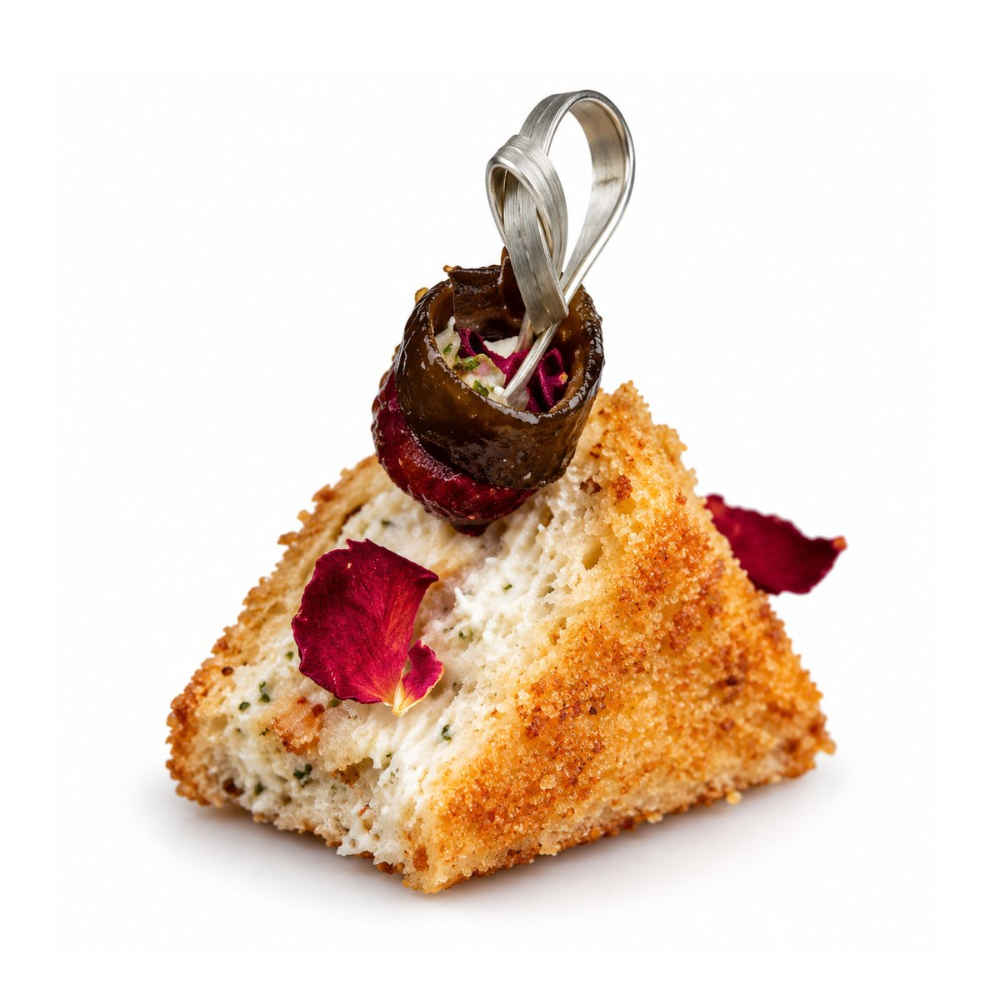

MINI & MANY
تشكيلة الدايت · Diet Collection

23
KCAL
تريانغل تشيز
Triangle Cheese
15 غ · 15 g
◆
المكونات · INGREDIENTS
توست براون — 4غ
مايونيز هاينز دايت — 5غ
ريد هوت تشيز المراعي لايت — 2غ مع رشة فلفل ملون
خس + مستردة
طماطم مجففة + هالبينو + ورد للديكور
تغليف بطاطا رفيع — 2غ
→ التالي
كل الأصناف ☰
السابق ←